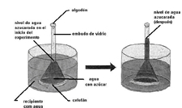

| Objetivo: |
Identificar el concepto de semipermeabilidad de una membrana. |
| Material |
| Introducción: |
| La membrana celular es una membrana semipermeable, que envuelve directamente el contenido celular. Es constituida por proteína y lípidos y tiene la función de proteger el contenido celular y controlar la entrada y salida de sustancias de la célula. |
| Desarrollo Experimental: |
|
Atención: el agua y los demás componentes deben ser aptos par el consumo y el experimento debe guardar las respectivas medidas de higiene. Experimento 1:
|
| Resultados y Concluciones: |
| 1) ¿Qué ocurrió con el nivel del agua en el tubo estrecho? Cuando dos disoluciones son separadas por una membrana semipermeable, el agua o cualquier otro disolvente de una disolución disuelta atraviesa la membrana en dirección a la disolución más concentrada (fenómeno de la ósmosis). El agua atraviesa la membrana plasmática por ósmosis. Al día siguiente al procedimiento, se puede verificar que el nivel del agua azucarada subió en el tubo del embudo, encima de la marca hecha. Eso demuestra que el agua del vaso atravesó el celofán y entró en el embudo. Sin embargo, probando el agua del vaso de precipitado se nota que no está dulce, por lo tanto, el azúcar no atravesó el celofán. Se verifica entonces que el celofán es una membrana semipermeable, porque deja pasar el agua (que tiene moléculas pequeñas), pero no el azúcar, cuyas moléculas son mayores. |
| Figura 1 |
|  |